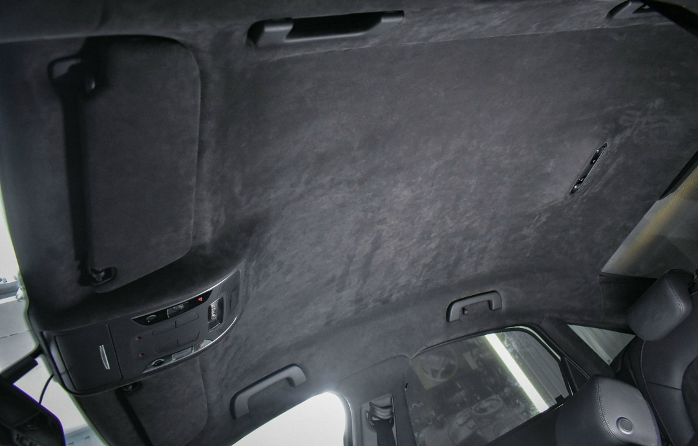
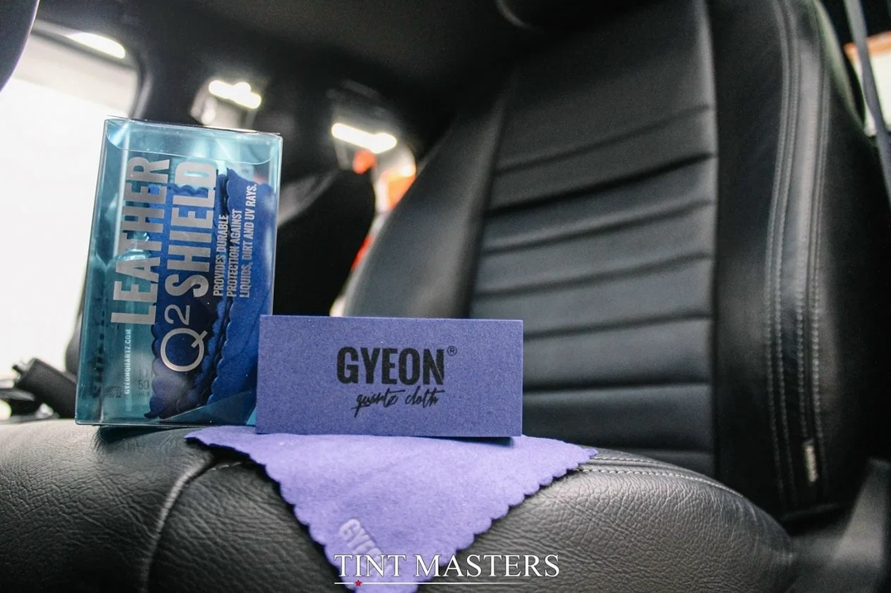
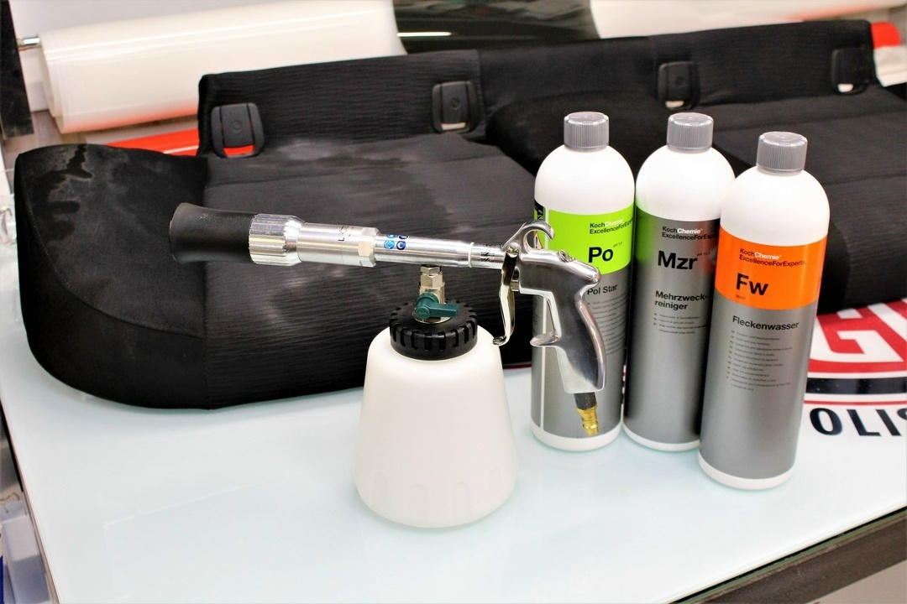
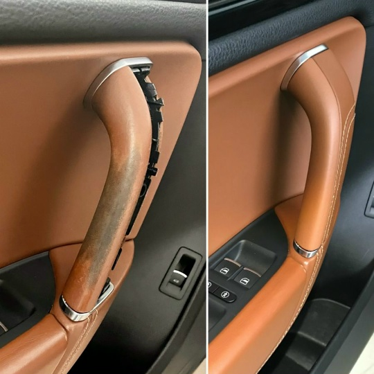

Мы знаем, как важно, чтобы ваш автомобиль выглядел идеально
Роскошь и премиум-класс для вашего салона

Перетяжка потолка в алькантару – это не просто изменение интерьера автомобиля, это шаг к премиум-классу и роскоши. Вот почему это стоит сделать:
Алькантара – материал, используемый в салонах автомобилей люксовых брендов. Перетяжка потолка придаёт интерьеру элегантность и современный стиль.
Мягкость и бархатистость алькантары создают уют и комфорт, которых нет у стандартных материалов.
Алькантара поглощает звуковые волны, уменьшая эхо и шумы в салоне.
Материал устойчив к загрязнениям и износу, легко чистится, долго сохраняет свой первозданный вид.
Возможность выбрать цвет и текстуру позволяет подчеркнуть уникальный характер автомобиля и удовлетворить самые взыскательные вкусы.
Премиальный потолок из алькантары значительно улучшает общий вид салона и повышает привлекательность авто на вторичном рынке.
Перетяжка потолка в алькантару – это инвестиция в комфорт, стиль и статус вашего автомобиля. Сделайте ваш салон уникальным и по-настоящему роскошным!
Сохраните красоту и долговечность вашей кожи

Профессиональная обработка кожаных элементов салона – это комплексная услуга по уходу и защите, которая сохраняет естественную красоту и продлевает срок службы кожаной обивки.
Увлажняет кожу, предотвращает её пересыхание и растрескивание. Создаёт барьер от воздействия ультрафиолета, пыли и загрязнений. Восстанавливает эластичность и мягкость материала.
Формирует сверхпрочный защитный слой, стойкий к износу, пятнам и влаге. Придаёт коже водо- и грязеотталкивающие свойства. Сохраняет натуральный внешний вид и текстуру обивки.
Идеальный выбор для тех, кто хочет сохранить салон автомобиля в идеальном состоянии и наслаждаться комфортом премиального ухода.
*Точная стоимость зависит от площади и состояния кожаных поверхностей
Глубокая очистка салона до состояния нового автомобиля

Наша премиум-химчистка – это комплекс профессиональных процедур, направленных на полное очищение и восстановление салона.
Удаление пятен, загрязнений и запахов с кожаных, тканевых и алькантаровых поверхностей.
Глубокая чистка пола и багажника с удалением въевшихся загрязнений.
Очистка и восстановление панелей, ручек, подлокотников и других элементов.
Верните коже первоначальный вид и эластичность

Реставрация кожаных элементов – это профессиональная услуга, которая возвращает кожаной обивке автомобиля её первоначальный вид, устраняет повреждения и продлевает срок службы материала.
Верните салону его роскошный вид! Реставрация кожи — экономичная альтернатива замене обивки, которая позволяет сохранить оригинальные материалы автомобиля.
*Стоимость зависит от площади повреждений и сложности работ
Запишитесь удобным способом — ответим быстро и подскажем лучший вариант.
Оставьте заявку — мы уточним детали, подберём решение и назовём стоимость. Обычно отвечаем быстро в рабочее время.